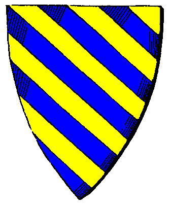

| Übersicht,
Anschläge und Stammtisch (RPG) |
|
Stiftung der Sternenwölfe (2  ) )
|
Elrohir v. glänzenen Wolfstern
  |
Wir - die Nation der Sternenwölfe - haben beschlossen, eine Stiftung für wohltätige Zwecke aus den Einnahmen unseres Palastes zu gründen.
Hiervon sollen in erster Linie diejenigen profitieren, die neu auf die Scherbenwelt kommen und etwas Hilfe in Form von Goldstücken, Ausrüstung und Hilfe benötigen.
(Anträge sind formlos an den Rat der Sternenwölfe zu richten)
Wir stellen zur Verfügung:
Goldstücke
(begrenzt auf 100.000 GS je Neuling)
Waren
(begrenzt auf die Errichtung eines Produktionsgebäudes und die ersten Produktionsgüter)
Wissen
(jeder Wolf des Rudels hat ein bestimmtes Wissenspotential, welches er zur Verfügung stellen wird.
El- Handel, Oli - Kampf, Wolli - Glaube, Doro - Diebstahl, Blaise - Schifffahrt, Ivica - Produktion, Leandra - Erste Schritte)
Siedlungsgebiet
(bei Bedarf - nicht zwingend notwendig)
Voraussetzung:
Scherbenneuling/Nationslos/Gebietslos/Neutral
Was nicht enthalten ist:
Nationszugehörigkeit/Freundschaftserklärung
(in das Rudel kommen nur persönlich bekannte Personen - Freundschaften können sich entwickeln)
Es muss nichts zurückgegeben werden, was empfangen wurde - alles galt lediglich für einen Beginn, ohne in das Mahlwerk der beiden Großmächte zu geraten und sich zunächst einmal gefahrlos orientieren zu können.
Sollten andere Nationen ebenso denken, so können sie sich - bei Wunsch/Bedarf - gern beteiligen.
Freundschaft und langes Leben
Elrohir v. glänzenen Wolfstern
Alpharüde der neutralen Nation Sternenwölfe
Baron Elrohir v. glänzenen Wolfstern,
Vorsteher von Wolfsmond,
Anführer der glorreichen Nation "Sternenwölfe",
Ehemann der reizenden Olivia v. glänzenen Wolfstern
Zur 24. Stunde am 28.Saatmond im Jahre 447 |
11.07.11 18:41
|
|
someone
  |
Ich begrüße diese Existensgründungshilfe der Sternwölfe und kann Neulingen diese nur empfehlen!
Die Neutralität und Großherzigkeit der Sternwölfe eilt ihrem Ruf vorraus und für Neusiedler ist es in heutigen Zeiten nicht einfach, sich selbständig und unabhängig etwas auf zu bauen. Wer die Hilfe der Wölfe in Anspruch nimmt, wird es sicher nicht bereuen!
Edler someone,
Vorsteher von Lorderon,
Anführer der glorreichen Nation "Schattenschwingen"
Zur 6. Stunde am 29.Saatmond im Jahre 447 |
11.07.11 19:59
|
|
Icke wieder
  |
Eine sehr schöne Intention, werter Baron v. glänzenen Wolfstern,
vergesst aber bitte nicht die Lektionen in Politik zum Thema Neutralität und es hilft in der Jungheldenausbildung immer auch etwas Benimmunterricht zu geben.
Ein Herz für Bildung
der Frostlektionär
Graf Ottor Waefre,
Vorsteher von Oneiros
Zur 4. Stunde am 31.Saatmond im Jahre 447 |
12.07.11 6:48
|
|
Chihiro Takeshi
  |
*Chi schreibt wohlgemut an´s Anschlagsbrett:*
Ein hilfreiches Unterfangen an dem ich mich gern beteiligen möchte, lieber El.
Lady Chihiro Takeshi,
Vorsteherin von Cho no Shi,
Anführerin der glorreichen Nation "Cho no shimai",
Arthwrfutta,
Ehefrau des ehrenwerten Arthwr Dyddplentyn
Zur 17. Stunde am 35.Saatmond im Jahre 447 |
13.07.11 8:18
|
|
Udra Dronn
  |
Gefällt mir, eine schöne Sache für Neulinge, vielleicht finden sich noch mehr nachmacher, meine Verbeugung vor der Sternenwölfe Nation.
Weiser Udra Dronn,
Vorsteher von Clouds End
Zur 4. Stunde am 38.Saatmond im Jahre 447 |
13.07.11 22:02
|
|
Ninniach Lhuthien
  |
Ach ich möchte mich an dieser wunderbaren Idee beteiligen und stelle einiges an GS zur Verfügung. Ich werde in den nächsten Tagen vorbei kommen und das Geld persönlich überbringen. Werde aber natürlich den Termin vorher mit Euch absprechen, werter Elrohir v. glänzenen Wolfstern
Lady Ninniach Lhuthien,
Vorsteherin von Tinu Anorêl,
Anführerin der glorreichen Nation "Nûr nui Ninniach"
Zur 1. Stunde am 21.Erntemond im Jahre 447 |
20.08.11 22:02
|
|
Elrohir v. glänzenen Wolfstern
|
Ich möchte hier allen denjenigen Dank sagen, die uns bisher unterstützt haben.
Es kam bereits einiges zusammen, zusätzlich zu unseren eigenen Gegenständen.
Es gab auch bereits einige Neulinge, die hiervon profitiert haben und hoffe darauf, dass es noch mehr werden.
Baron Elrohir v. glänzenen Wolfstern,
Vorsteher von Wolfsmond,
Anführer der glorreichen Nation "Sternenwölfe",
Ehemann der reizenden Olivia v. glänzenen Wolfstern
Zur 6. Stunde am 37.Erntemond im Jahre 447 |
24.08.11 16:51
|
|
Berenike
 |
Auch ich möchte hier den Sternenwölfen danken, die meinem Sohnemann hier so wundervoll helfen !
Auch mir stehen sie immer mit Rat und Tat zur Seite.
Tausend Dank Euch Sternenwölfen
Nell
Freifrau Nell,
Vorsteherin von Nell`s Burg,
Mutter von Jeremias
Zur 23. Stunde am 41.Dunkelfrost im Jahre 447 |
15.09.11 19:09
|
|
Elrohir v. glänzenen Wolfstern
|
Schon einiges ist an Zeit vergangen - und einigen konnte der Anfang auf der Scherbenwelt erleichtert werden.
Einige sind geblieben - andere weitergezogen.
Da die Wölfe immer noch und immer wieder Gegenstände haben und Spenden erhalten, möchte ich den Anschlag hier aus diesem Grund noch einmal hochhalten und all jene, die uns kennen darum bitten, bei Neulingen doch Werbung zu machen - so sie diese nicht in ihren eigenen Reihen aufnehmen möchten.
Weiterhin möchte ich dies zum Anlaß nehmen, mich hier noch einmal bei all jenen zu Bedanken, die diese Stiftung mit Rat und Tat unterstützt haben.
Baron Elrohir v. glänzenen Wolfstern,
Vorsteher von Wolfsmond,
Anführer der glorreichen Nation "Sternenwölfe",
Ehemann der reizenden Olivia v. glänzenen Wolfstern
Zur 18. Stunde am 27.Saatmond im Jahre 449 |
26.12.11 11:41
|
|
| Tristan (RIP) |
Auch ich würde dieser Stiftung gerne etwas helfen, sei es mit ein paar Informmation oder mit einem Säckchen kleiner Goldlinge.
Ich werde mich bei Euch via Möwe melden werter Baron Elrohir v. glänzenen Wolfstern.
Sir Tristan,
Vorsteher von Narona
Zur 2. Stunde am 55.Blumenmond im Jahre 450 |
15.04.12 20:40
|
|
Berenike
|
dieses ist noch immer eine gute idee und hilfe.
So hoffe ich, das dieses reichlich genutzt wird !
weiter so !!!
Freifrau Nell,
Vorsteherin von Nell`s Burg,
Mutter von Jeremias,
Verlobte des ehrenwerten Spartacus
Zur 10. Stunde am 2.Erntemond im Jahre 450 |
24.04.12 13:48
|
|
Tattergreis
  |
wenn der aushang nicht so hoch hänge, wäre er auch für die kleinsten unter den zwergen zu entziffern ...
*grml*
Tattergreis
Zur 19. Stunde am 29.Saatmond im Jahre 452 |
04.09.12 23:05
|
|
Kantar
 |
*kommt vorbei und hebt den Zwergen hoch ,damit er alles lesen kann*
Baron Kantar,
Vorsteher von Nargothrond,
Anführer der glorreichen Nation "Händler der Freiheit",
Witwer von Pebrilia Celil-Galdor
Zur 17. Stunde am 31.Saatmond im Jahre 452 |
05.09.12 9:51
|
|
| Hufus (RIP) |
Danke für die großzügige Unterstützung! Das macht den Anfang VIEL leichter!
Hufus
Zur 21. Stunde am 11.Blumenmond im Jahre 452 |
21.09.12 18:52
|
|
Olivia v. glänzenen Wolfstern
|
so war es gedacht, werter Hufus und ich bin erfroit, dass es sein Ziel erreicht hat,
und beim ehrenwerten Elminster muss ich mich wohl entschuldigen,
ich denke, mein Koch hat die Tauber gebraten, statt erst einmal auf Post zu achten,
eine dementsprechende Mitteilung ist bereits an ihn versandt
Weise Olivia v. glänzenen Wolfstern,
Vorsteherin von Wolfsstern,
Ehefrau des ehrenwerten Elrohir v. glänzenen Wolfstern,
Feuerwölfin der Nation
Zur 22. Stunde am 11.Blumenmond im Jahre 452 |
21.09.12 18:55
|
|
| Ezra Scarred (RIP) |
Ich bedanke mich ebenfalls.
Der Start wird wirklich vereinfacht.
Justblackout
Zur 24. Stunde am 28.Blumenmond im Jahre 452 |
25.09.12 18:39
|
|
Tattergreis
|
Nach einigen Wochen Spielspass kann ich jedem Neuling die Wölfe empfehlen. Nettes Rudel, gute Starthilfe, kompetent, neutral und ideal auch für Spieler, die gerne wirtschaften und darin ihre Kenntnisse vertiefen wollen.
*Dankeschön*
Sir Tattergreis,
Vorsteher von Wolfsherz
Zur 1. Stunde am 67.Blumenmond im Jahre 452 |
04.10.12 15:40
|
|
| Farodan (RIP) |
Ich möchte mich einmal ganz herzlich für die großzügige Starthilfe bedanken!
Eine wahrlich große Hilfe für jeden Scherbenneuling!
Vielen lieben dank!
Farodan
Farodan
Zur 13. Stunde am 1.Saatmond im Jahre 453 |
21.11.12 8:59
|
|
Lilli
  |
Jetzt, wo "Punschel" wieder weg ist, möchte ich mich für die Starthilfe der Sternenwölfe bedanken.
*mit einen zwinkern hinzufügt* auch wenn meine Begleiter inzwischen herausgefunden haben das die Rüstungen nur einen geistigen Wert haben.
Lilli
Zur 20. Stunde am 60.Blumenmond im Jahre 453 |
26.12.12 5:02
|
|
Don Boot
 |
Es ist mir ein Bedürfnis mich zu bedanken für die Starthilfe die ich durch die "Sternenwölfe" erhalten habe.
Und jedem der neu hier her kommt auf die Scherbe, kann ich es nur empfehlen.
Vielen Dank sagt Don Boot
Don Boot
Zur 21. Stunde am 74.Blumenmond im Jahre 453 |
29.12.12 11:31
|
|
| Kalle Specklöffel (RIP) |
Ein riesengroßes Lob für die Stiftung der Sternenwölfe.
Das Willkommenspaket wurde herzlichst entgegen genommen und wird weise eingesetzt.
Kalle Specklöffel
Zur 17. Stunde am 80.Blumenmond im Jahre 453 |
30.12.12 20:20
|
|
Tattergreis
|
Unentbehrliches nach oben :)
Freiherr Tattergreis della Luna,
Vorsteher von Nín Andúne,
Anführer der glorreichen Nation "Luna Park S.A.L"
Zur 12. Stunde am 87.Dunkelfrost im Jahre 453 |
12.02.13 10:14
|
|
| Shagdreg (RIP) |
*langsam an den Anschlag kommt die Hände in den Ärmeln der Robe steckent das Haupt gesenkt leise von sich gibt*
Auch ich spreche meinen Dank aus und...
*schweigt dann doch und verlässt den Anschlagsplatz*
Shagdreg
Zur 9. Stunde am 50.Blumenmond im Jahre 454 |
17.03.13 18:28
|
|
| FraSchadei (RIP) |
Klasse was die Wölfe für Neuankömmlinge tun und bedanke mich für das Start-Packet so wie tollen Ratschläge und Hilfestellungen.
Kann ich jedem der hier NEU ankommt nur empfehlen .
FraSchadei
Zur 13. Stunde am 5.Erntemond im Jahre 454 |
28.03.13 7:18
|
|
Tattergreis
|
*Den Anschlag wieder oben anheftet*
Freiherr Tattergreis della Luna,
Vorsteher von Nín Andúne,
Anführer der glorreichen Nation "Luna Park S.A.L"
Zur 20. Stunde am 62.Saatmond im Jahre 455 |
22.05.13 16:08
|
|
Tattergreis
|
*Ein kitzekleiner Wichtel wuchtet den Anschlag nach oben*
Freiherr Tattergreis della Luna,
Vorsteher von Nín Andúne,
Anführer der glorreichen Nation "Luna Park S.A.L"
Zur 1. Stunde am 57.Erntemond im Jahre 455 |
02.07.13 7:49
|
|
| Muranu Vetlau (RIP) |
Vielen herzlichen Dank, auch ich habe die Starthilfe beantragt und kann die Stiftung nur empfehlen. Ich danke den Sternenwölfen für diese tolle Idee und Umsetzung. Das werde ich nicht vergessen.
Muranu Vetlau
Zur 9. Stunde am 8.Dunkelfrost im Jahre 455 |
11.07.13 23:15
|
|
| Lissi (RIP) |
Vielen lieben Dank, auch mir ist die Starthilfe gewährt worden und ich kann mich nun ersteinmal in aller Ruhe umsehen und rumreisen.
Ich kann es nur weiterempfehlen
Lissi
Zur 10. Stunde am 81.Dunkelfrost im Jahre 455 |
29.07.13 0:16
|
|
| Igel (RIP) |
guten tag edle :)
ich bin so neu dass ich nicht mal weiß wie ich euch kontaktiere :(
vllt hab ihr auch noch einen guten tipp was und wi ich am anfang hinsollte :((((
Igel
Zur 20. Stunde am 69.Saatmond im Jahre 459 |
25.04.14 7:14
|
|
Apollymi
  |
*ans Anschlagbrett kommt und der Person einen Zettel mit zwei Wegebeschreibungen nach Wolfsmond zusteckt. dann auf den ersten Anschlag deutet* da Elrohir hilft Euch ganz bestimmt. mir hat er auch schon geholfen. Sehr freundlich. Dafür auch noch ein Danke.
Lady Apollymi,
Vorsteherin von Burg Sternental,
Priesterin im Dienste des einzig wahren Glaubens an Wendaria
Zur 11. Stunde am 70.Saatmond im Jahre 459 |
25.04.14 10:47
|
|
| Igel (RIP) |
ich habs dank apollymi endlich geschafft :D
danke olivia... hättet ihr ein kleines startkapital? ich wollte im spiel schreiben aba war unfähig :////
was sollte ich am anfang holen?
- einen karren
- einen krieger
-...?
darf ich was bauen ? habe 4 werkzeuge :)
Igel
Zur 22. Stunde am 74.Saatmond im Jahre 459 |
26.04.14 11:55
|
|
Berenike
|
*sich den anschlag noch mal durchliest*
Baronesse Berenike,
Vorsteherin von Nell`s Burg,
Ehefrau des ehrenwerten Daerwain Saelhugion
Zur 19. Stunde am 15.Blumenmond im Jahre 461 |
18.10.14 16:48
|
|
Berenike
|
*Nachricht mal wieder nach oben setzt
Baronesse Berenike,
Vorsteherin von Nell`s Burg,
Ehefrau des ehrenwerten Daerwain Saelhugion
Zur 17. Stunde am 80.Dunkelfrost im Jahre 462 |
13.03.15 20:08
|
|
Tattergreis
|
*schnäuzelt die stiftung nach oben*
Veteran Tattergreis,
Vorsteher von Nín Andúne,
Anführer der glorreichen Nation "Luna Park S.A.L"
Zur 13. Stunde am 4.Dunkelfrost im Jahre 463 |
19.05.15 1:38
|
|
Übersicht,
Anschläge und Stammtisch (RPG)
|